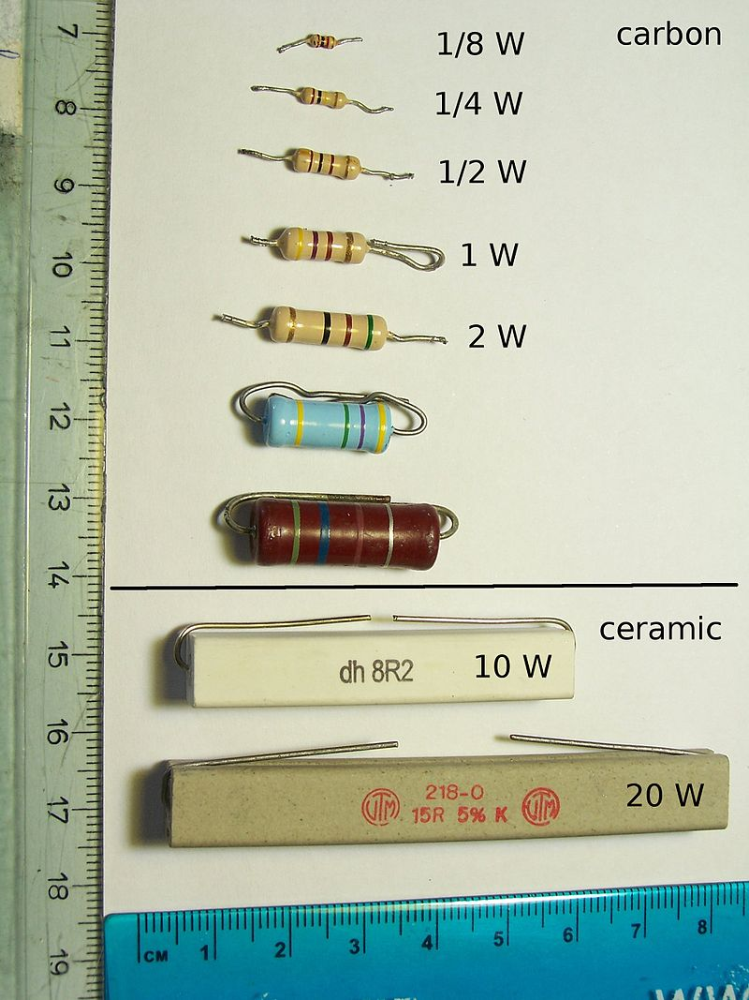
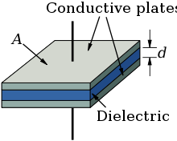
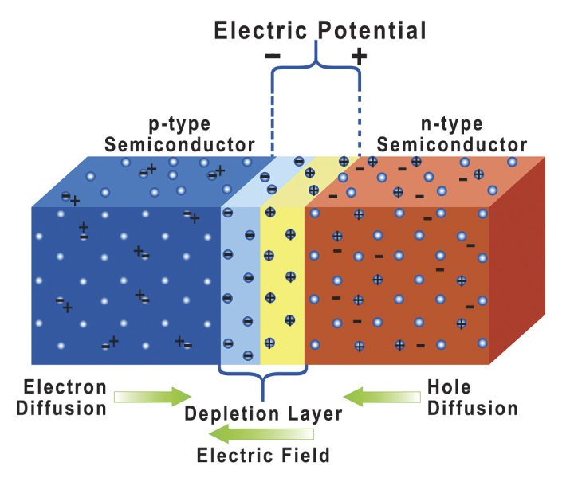

Circuit Devices
Documentation for all standard components. Specific components that can be generalized with similar characteristics are grouped together. (Ex. Schottky Diode is with Diodes).
Resistor
Overview
The simplest of all electrical components. A resistor is a passive two terminal device that applies electrical resistance.
Component Options
Thick Film Resistor
Standard THT resistor commonly found in prototypes around the world.
+ Cheap and Easy to work with
+ Various packages for different amounts of power dissipation
- Low Tolerance, package leads adjust resistance slightly
- Stray Capacitance, package lengths add in line capacitance

Potentiometer
Adjustable resistance based either on a physical knob or a digital register. Adjustable between two resistance values. Can be either THT or SMD.
Capacitor
Overview
Stores electrical charge in an electric field. Resists changes in voltage.
Two conductive plates are seperated by a dielectric to store charge. 
Capacitance is defined as
Component Options
Aluminum Electrolytic Capacitor
Ceramic Disk Capacitor
Inductor
Stores electrical charge in a magnetic field.
Resists changes in current by inducing a current.
\(L = \dfrac{\Phi{}_B}{I}\) where \(\Phi{}_B\) is the magnetic flux linkage generated by a given current \(I\)
Diodes
Overview
A diode is a semiconductor device that allows current to flow in only one way.
Theory
A standard PN diode is an assembly of two differently dopped regions of a material (commonly silicon). Doping is process of exposing the material to other elements so free electrons are produced. The coefficents of a doped region are the amount of valence electrons for a given area.

All diodes have a voltage drop across the diode (usually 0.7V). This is because of the differences in doping between the two regions.
The ability for current to flow across the diode is controlled by the depletion layer. The movement of this layer determines which of the four possible modes the diode is operating in.
-
Open-Circuit - No external affect on the circuit. Since there is no input, there is no output.
-
Forward Bias - External current applied to the anode (negative P terminal). The ideal current across the diode is
- \(I_D\) = current throught the diode
- \(I_S\) = saturation current of the diode
- \(V_D\) = voltage drop across the diode (0.7V)
- \(V_T\) = thermal voltage (0.026V at room temperature)
- \(n\) = ideal factor based on fabrication (1 unless defined from manufacturer)
-
Reverse Bias - External current applied to the cathode (positive N) terminal). This is in the opposite direction that current is supposed to be applied
Operational Amplifier (Op-Amp)
A generic voltage amplifier commonly used in analog signal amplification due to its simplicity.


This is the equivlanet circuit as an op-amp. Different devices will contain many more components but this is the simplification.
- \(A_{vo}R_i\) - Voltage Controlled Voltage Source
- \(A_{vo}\) - Gain Factor
- \(R_i\) - Input Resistance
- \(R_o\) - Output Resistance - Accounts for change in output voltage as the amplifier is utilized to supply more output current to a load.
When designing an amplifier, \(R_o\) should always be smaller than \(R_L\). This will maintain a voltage gain greater than 1.
The input resistance induces a voltage divider action at the input. Where \(R_S\) is the resistance from the source to the amplifier.
So the effective gain of the circuit including the \(R_S\) resistance is.
MOSFET
Stands for Metal-Oxide-Semiconductor-Field-Effect transistor
BJT (Bipolar Junction Transistor)
A current based transistor that is either NPN or PNP where there are two junctions. All BJT's have four different operating modes
- Saturation - Both junctions forward biased
- Cutoff - Both Junctions reverse biased
- Forward Active (Amplifier) - EBJ forward biased, CBJ reversed biased
- Reverse Active - EBJ reverse biased, CBJ forward biased